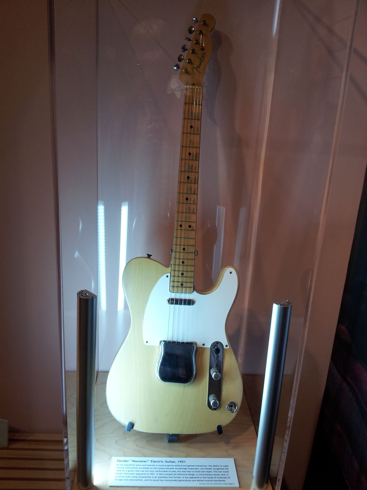
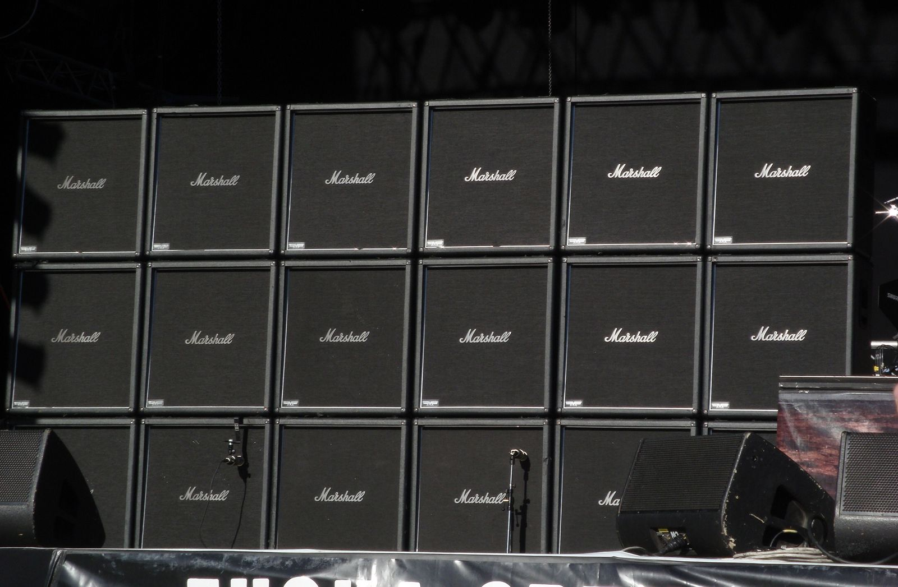
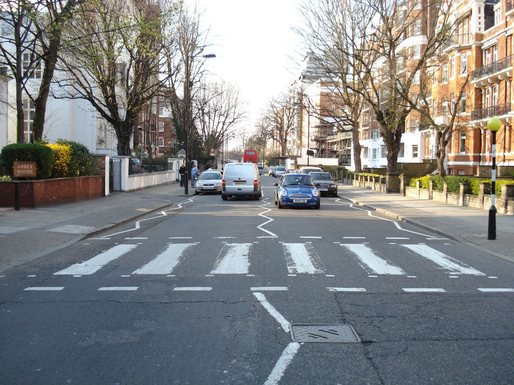

1954 年 7 月 5 日晚上，美国孟菲斯，联合大道 706 号，一间小小的录音棚。
一个 19 岁的卡车司机正在试音。老板 Sam Phillips 让他和两个乐手（一把电吉他、一把低音提琴）录了好几个小时的抒情歌，都不对味。中间休息时，这个年轻人抱起吉他，开玩笑似的用很快的节奏唱起一首黑人布鲁斯老歌，另外两个人也跟着胡闹起来。
控制室里的 Phillips 探出头问：你们在干什么？他们说不知道。他说：再来一遍，我录下来。
这个年轻人叫 Elvis Presley。那首歌叫《That's All Right》。几天后录的 B 面，是民歌与乡村那章讲过的蓝草歌曲《Blue Moon of Kentucky》。一面是黑人的布鲁斯，一面是白人的蓝草，两条根在这张唱片上碰到了一起。
那摇滚呢？它是怎么从布鲁斯里长出来的
布鲁斯那章回答了这个问题的前半段：十二小节、蓝调音、呼应。这一章是后半段：根是怎么长成主干的。摇滚是从布鲁斯和乡村里长出来的第一根大树干，后面的朋克、金属、另类、独立，甚至一部分嘻哈和电子，都是从这根树干上再分出去的枝。
这一章还是先拆零件（后拍、乐队编制、电吉他和失真、riff、录音棚），再沿着时间走：1950 年代的摇滚乐，1960 年代的英国入侵和迷幻，1970 年代的硬摇滚和前卫，1990 年代的另类，最后是中文世界的摇滚。
01 / birth摇滚乐的诞生
“摇滚乐”（rock and roll）这个词在黑人俚语里早就有，原本带着跳舞和性的暗示。1950 年代初，克利夫兰的电台 DJ Alan Freed 开始用它来称呼自己播放的节奏布鲁斯唱片，因为这样白人青少年听众就不会觉得“这是黑人音乐”。名字从一开始，就带着那条货架上的分界线（民歌与乡村那章讲过）。
第一张摇滚唱片是哪张？
这个问题没有标准答案，但最常被提到的是 1951 年的《Rocket 88》。它也是在孟菲斯 Sam Phillips 的录音棚录的。传说乐队在路上把吉他音箱摔坏了，喇叭纸盆裂开，音色变得又脏又毛，Phillips 觉得好听，就这么录了。这可能是唱片史上最早的“失真吉他”之一。
- Bill Haley & His Comets 的《Rock Around the Clock》1955 年随电影《黑板丛林》走红，成为第一首登上全美榜首的摇滚歌
- Chuck Berry 把布鲁斯的十二小节、乡村的叙事和响亮的电吉他结合在一起，写的是汽车、学校和女孩，是青少年自己的生活。他的吉他前奏被后来几乎每个摇滚吉他手学过
- Little Richard 带来了福音教堂的尖叫和狂暴的钢琴
- Elvis Presley 把这一切带给了全国的电视观众，也把扭动的舞台动作带进了千家万户的客厅
02 / backbeat后拍：军鼓打在 2 和 4
如果只能用一个特征来定义摇滚乐，那就是“后拍”（backbeat）：一小节四拍，军鼓重重地打在第 2 拍和第 4 拍。
这听起来理所当然，但在当时是个大变化。进行曲、波尔卡、很多欧洲舞曲的重音在第 1 拍和第 3 拍（“嘭、恰、嘭、恰”，乡村的 boom-chick 也是这样）。后拍把重音挪到了“弱拍”上，让身体忍不住往前倾。你在演唱会上跟着拍手，大概率也是拍在 2 和 4。
摇摆的 shuffle，军鼓轻，萨克斯式的 boogie 低音。
拉直成八分音符，军鼓在 2、4 拍重重地砸下去。
两根弦一起弹的双音，加上推弦，然后乐队进来。
03 / the band乐队的形状
1950 年代末到 1960 年代初，摇滚乐队定型成了一个今天看来再熟悉不过的形状：主唱、两把电吉他、电贝斯、架子鼓。这个编制能塞进一辆面包车、一个车库，在任何酒吧都能演。它的每个位置，都对应着前面几章讲过的东西：
- 鼓：节奏的骨架。后拍就是它打出来的
- 贝斯：低音线，和鼓的底鼓“锁”在一起。巴洛克那章说的“通奏低音”里的低音乐器，就是它的祖先。1951 年 Fender 推出了第一款量产电贝斯，让贝斯手不用再扛着大提琴那么大的低音提琴
- 节奏吉他：和弦。相当于通奏低音里的键盘手
- 主音吉他：riff、填充和独奏，在主唱不唱的地方说话。这就是布鲁斯“呼应”里的“应”
- 主唱：旋律和歌词
底鼓、军鼓、踩镲。
低音和底鼓对齐。
和弦把中间填满。
在空隙里弹一个 riff。
完整的乐队。
04 / electric guitar电吉他、失真与 riff
实心电吉他
1930 年代就有人给吉他装上拾音器，但那些空心的琴一开大音量就会啸叫。1950 年前后，Leo Fender 推出了实心琴身的电吉他（后来叫 Telecaster），1952 年 Gibson 推出了 Les Paul。实心琴身不容易啸叫，可以开得很响，而且结构简单、能流水线生产。电吉他从此成为摇滚的标志。

失真：从“坏掉的声音”到风格
电吉他的信号进入音箱，被放大，再从喇叭里出来。如果把音箱开到超过它能承受的范围，声波的波峰就会被“削平”，原本圆润的声音变得毛糙、厚重，还多出了很多新的泛音，这就是“失真”（distortion）。
失真最早是“意外”和“破坏”的产物：除了《Rocket 88》那只摔坏的音箱，1964 年 The Kinks 的吉他手为了得到更脏的声音，用刀片割破了音箱的喇叭纸盆，录出了《You Really Got Me》。1965 年，The Rolling Stones 的《Satisfaction》用了一个叫“法兹”（fuzz）的效果器，那个毛茸茸的吉他声让这个小盒子一下子卖断了货。从此，失真从“坏掉的声音”变成了可以买、可以调的风格。
riff：一句让你记住整首歌的话
riff 是一个短小的、不断重复的乐句，通常由吉他弹出，常常比歌词更让人记得住。你想起一首摇滚歌的时候，脑子里先冒出来的往往是它的 riff。巴洛克那章说的“固定低音”和这一章的 riff，是同一个思路的两个时代：一句话反复说，说到你忘不掉。
1950 年代的音箱，开得不大。
音箱开到冒烟的边缘，1964 年。
波形几乎被削成方波，1965 年。

05 / british invasion英国入侵与录音棚
出口转内销
1950 年代末，美国的摇滚乐好像熄火了：Elvis 去当兵，Little Richard 去当牧师，Chuck Berry 吃了官司。可是在大西洋对岸，英国利物浦和伦敦的一群年轻人，正在痴迷地听从美国港口流进来的布鲁斯和摇滚唱片。
1964 年 2 月 9 日，The Beatles 在美国最受欢迎的电视综艺节目上演出，据统计有约 7300 万人收看。随后几年，一大批英国乐队涌进美国排行榜，这被称为“英国入侵”。The Rolling Stones 的名字来自布鲁斯歌手 Muddy Waters 的一首歌，他们早期大量翻唱美国黑人布鲁斯。很多美国白人青少年，是通过这些英国乐队，才第一次认真听到了自己国家的布鲁斯。
录音棚变成乐器
1966 年，The Beatles 停止了巡演，把全部精力放进了伦敦阿比路的录音棚。他们和录音师一起发明了很多今天仍在使用的技巧：
- 倒放：把录好的磁带反过来放，声音“先有尾巴，后有开头”，像是被吸进去
- 磁带循环：把一小段磁带首尾粘起来循环播放，和巴洛克的固定低音、今天的采样 loop 是同一个思路
- 人工双轨（ADT）：录音师发明了一种方法，把一条人声复制一份，稍微错开一点点时间，听起来像唱了两遍叠在一起，更厚、更亮
从这时起，录音棚本身变成了一件乐器。很多摇滚歌曲不再是“把现场录下来”，而是在录音棚里一层一层“搭”出来的，现场根本没法原样演出。

同一句吉他，先正着放，再倒着放。
同一句人声，第二个按钮叠了一层错开几十毫秒的副本（戴耳机更明显）。
06 / psychedelia迷幻与 Woodstock
1960 年代后半段，摇滚和嬉皮士运动、反战运动、迷幻药文化缠在一起，出现了“迷幻摇滚”：更长的即兴、更奇怪的音色、更“飘”的空间感。
这个时代最重要的吉他手是 Jimi Hendrix。他是美国黑人，却先在伦敦成名，把布鲁斯的推弦和呼应推到了极端，并且把电吉他的“缺点”都变成了表达：
- 回授（feedback）：吉他离音箱太近，声音会被拾音器再拾回去，形成持续的尖啸。别人避之不及，他拿来控制和演奏
- 哇音踏板（wah-wah）：用脚踩一个踏板，让吉他声音的“亮度”来回扫动，听起来像在说“哇——哇——”
1969 年 8 月，纽约州的一片农场上举行了 Woodstock 音乐节，据估计有约 40 万人到场。音乐节最后一个早上，Hendrix 用电吉他演奏了美国国歌，用失真和回授模拟炸弹和警报声，被很多人看作对越战的抗议。
一段放克味的切音节奏。
同一段，滤波器在高低之间来回扫。
一个长音慢慢“长”出一个尖锐的泛音。
07 / hard rock硬摇滚与吉他独奏
1960 年代末到 1970 年代，摇滚越来越重、越来越响：Led Zeppelin、Deep Purple、Black Sabbath 等乐队把布鲁斯的 riff 放大、放慢、加重，开出了“硬摇滚”和“重金属”的路（这条路留给后面的“硬摇滚”和“金属”两章）。乐队开始在体育场演出，被称为“体育场摇滚”（arena rock），Queen 是其中最有名的之一。
独奏的语言：五声音阶
这个时代的另一个标志是长长的吉他独奏。大多数摇滚独奏用的，其实就是小调五声音阶：布鲁斯那章讲过的布鲁斯音阶，去掉蓝调音就是它，独奏时再把蓝调音加回来。在吉他上，它有一个非常好记的“方块”指型，几乎每个摇滚吉他手的第一课都是它。
方块里的音，从低到高再回来。
同样这几个音，加上推弦、揉弦和节奏，就成了一段独奏。
第二段用到的音，没有一个超出第一段。区别全在“怎么说”：推弦、停顿、重复、高潮。
08 / progressive前卫摇滚：拍子也能变
后面朋克那一章会说，1970 年代的摇滚变得“太长、太难、太远”。这里说的主要就是前卫摇滚（progressive rock）：Pink Floyd、Yes、King Crimson、Genesis 等乐队受古典音乐影响，写很长的组曲、用合成器、玩复杂的拍子。
大部分摇滚歌都是 4/4 拍：数“1、2、3、4”。前卫摇滚喜欢用“奇数拍”，比如 7 拍一小节。Pink Floyd 1973 年的《Money》主体就是 7/4 拍，听起来像总是“少了一拍”，有一种跛脚往前赶的感觉。
“1 2 3 4”，稳稳地走。
“1 2 · 1 2 · 1 2 3”，最后一组多一拍。
09 / song form一首摇滚歌的结构
不管多复杂，绝大多数摇滚歌都可以拆成几个“积木”：
- 前奏（intro）：常常就是 riff
- 主歌（verse）：讲故事，每次歌词不同，音量相对克制
- 副歌（chorus）：全曲最大声、最好记的部分，每次歌词基本相同
- 桥段（bridge）：换几个和弦，制造“离家”的感觉，再回到副歌
- 独奏（solo）：吉他（或别的乐器）的时间
民歌与乡村那章说，叙事曲没有副歌，靠“接下来发生了什么”吸引你；摇滚和流行歌则靠“副歌什么时候回来”吸引你，主歌的每一次“收着”，都是为了副歌的“放出来”。
进度条依次是：前奏、主歌、副歌、主歌、副歌、独奏、尾奏（桥段省略了）。注意副歌进来的那一刻，鼓、吉他和音量一起“打开”。
10 / after之后：另类与独立
1970 年代后期，朋克拿起斧头砍向“太贵的摇滚”（见朋克那章），之后摇滚的树干开始疯狂分枝。
“安静—大声—安静”
1980 年代末，美国波士顿的乐队 Pixies 把一种结构用到了极致：主歌几乎安静到只剩贝斯和人声，副歌突然变成轰鸣的失真墙。Nirvana 的 Kurt Cobain 说过，他写《Smells Like Teen Spirit》时就是在模仿 Pixies。这种“安静—大声”的强烈对比，成了 1990 年代另类摇滚和垃圾摇滚（grunge）的标志，也影响了英国的 Radiohead 等乐队。
主歌只有干净的吉他分解和弦、贝斯和很轻的鼓；副歌进来时，同一组和弦换成了失真的强力和弦。建议先把音量调低一点。
2000 年代初，纽约的 The Strokes 和底特律的 The White Stripes 带来了一波“车库摇滚复兴”，重新回到简单的编制和粗糙的声音。此后，“独立摇滚”（indie rock）成了一个大到几乎什么都能装的标签，而摇滚在主流排行榜上的位置，渐渐让给了嘻哈和流行。但它留下的东西无处不在：乐队编制、副歌结构、电吉他的声音，今天的流行歌和嘻哈里都还能听到。
11 / in chinese中文摇滚
1986 年的《一无所有》
1986 年 5 月 9 日，北京工人体育馆举行了一场百名歌星演唱会。一个穿着长褂、裤腿一高一低的年轻人抱着吉他上台，唱了一首没人听过的歌：《一无所有》。他叫崔健。这一晚通常被看作中国摇滚的诞生日。三年后，他的专辑《新长征路上的摇滚》出版。
崔健的音乐里，能听到本书好几章的影子：布鲁斯的呼应、摇滚的乐队编制，还有中国北方民歌的旋律和唢呐的音色。
1990 年代：魔岩与红磡
1990 年代初，北京出现了一批重要的乐队和歌手：唐朝乐队 1991 年底发行的《梦回唐朝》把重金属和唐诗、古典的气势结合在一起；黑豹乐队的唱片在港台和内地都卖得很好。1994 年 12 月，窦唯、张楚、何勇（被并称为“魔岩三杰”）和唐朝乐队在香港红磡体育馆举办了“摇滚中国乐势力”演唱会，被很多人看作中国摇滚的巅峰时刻。
香港和台湾
香港的 Beyond 乐队从 1980 年代起，把摇滚和粤语流行结合起来，写出了《海阔天空》等一代人的歌。台湾的五月天在 1990 年代末成立，把乐队摇滚带进了华语流行的主流，至今仍是最受欢迎的华语乐队之一。
今天
2000 年代以后，中文摇滚更多地走向了 livehouse 和音乐节：新裤子、痛仰、万能青年旅店、草东没有派对……2010 年，来自石家庄的万能青年旅店发行了首张专辑，用小号、贝斯和长篇的歌词，写出了一个北方工业城市的衰落，被很多人看作那十年最好的中文摇滚专辑之一。
12 / listen听：本章十二首曲目
按时间顺序听。每首歌都提供 YouTube、网易云和 QQ 音乐的搜索链接。
13 / practice练 · 术语表
练习 1：拍在 2 和 4
听《Johnny B. Goode》，先跟着在 1 和 3 拍手，再换到 2 和 4。哪种感觉更“对”？那一下军鼓在哪？
练习 2：找 riff
听《You Really Got Me》和《Satisfaction》，第一次出现 riff 时在心里哼下来。整首歌里它出现了几次？歌词唱的时候，它还在吗？
练习 3：画一张歌的地形图
选一首你喜欢的摇滚歌（中文的也可以），按图 7 的方法，在纸上画出前奏、主歌、副歌、独奏、桥段的顺序和高低。副歌出现了几次？有没有桥段？
练习 4：数 7
听《Money》，跟着贝斯数“1 2 · 1 2 · 1 2 3”。到吉他独奏时，它是不是换成了 4 拍？
术语表
- 摇滚乐
- 1950 年代由节奏布鲁斯、乡村和福音融合而成的音乐
- 后拍
- 军鼓重音落在每小节第 2、4 拍的节奏，摇滚的标志
- 主音 / 节奏吉他
- 负责 riff 和独奏的吉他 / 负责和弦伴奏的吉他
- 电贝斯
- 电声低音乐器，1951 年开始量产，取代了低音提琴
- 实心电吉他
- 没有空心共鸣箱的电吉他，不易啸叫，可以开得很响
- 失真
- 信号被削波后变得毛糙、厚重的声音
- 过载 / 法兹
- 失真的两种程度：音箱刚刚“推爆”的过载，和几乎变成方波的法兹
- riff
- 短小、反复出现、让人记住整首歌的乐句
- 英国入侵
- 1964 年起英国乐队大举进入美国排行榜的现象
- 倒放 / 磁带循环
- 把录音反向播放 / 把一小段录音首尾相接反复播放
- 双轨人声
- 把人声叠两层以加厚声音，可以真唱两遍，也可以人工制造
- 回授
- 拾音器拾回音箱声音形成的持续啸叫
- 哇音
- 用踏板扫动滤波器，让声音像在说“哇”的效果器
- 五声音阶
- 五个音的音阶，摇滚独奏最常用的语言
- 推弦
- 把弦往旁边推，让音高连续升高
- 奇数拍
- 如 5/4、7/8 这样不能平均分成两半的拍子
- 主歌 / 副歌 / 桥段
- 讲故事的段落 / 最响最好记的段落 / 换和弦制造对比的段落
- 另类摇滚
- 1980–90 年代从独立厂牌和大学电台兴起的摇滚
- 独立摇滚
- 最初指独立厂牌发行的摇滚，后来泛指一种风格